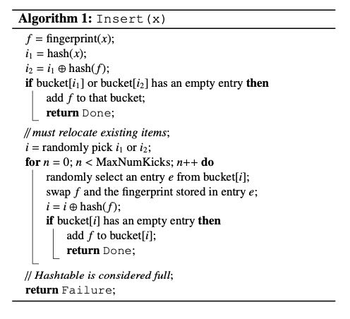
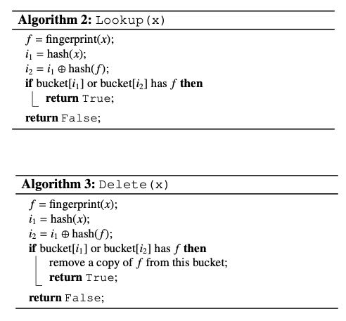

Cuckoo Filter: Practically Better Than Bloom
类似使用cuckoo hash table的方式，但是里面只存储了fingerprint/hashvaue. 然后hash table是由多个buckets组成的，而一个bucket里面可能存在很多个entries，类似与CPU cache associative ways. 比bloom filter的好处就是支持删除，性能的话直觉上看应该也还行。
关于cuckoo hashing 我在考虑是如何处理collision的。理论上如果有3个元素他们的2 hash values % mask完全一致的话（可能概率不高），那么就会出现cycle的情况，这个时候就要做rehash. 按照wiki https://en.wikipedia.org/wiki/Cuckoo_hashing 上作者说的，rehash其实不一定需要扩表，如果load factor比较低的话，那么可以更换hash function搞定（但是现实中感觉更换hash function有点麻烦不太好调试)
实现也比较容易理解，我贴一下论文里面的伪代码。下面是插入的过程，它这个理论是要求插入的两个位置 h1(x) xor h2(x) = fingerprint(x). 这样根据一个bucket可以算出另外一个bucket. 查询的时候，只需要同时去这两个bucket里面看看有没有就行。如果使用16bit的fingerprint的话，那么bucket设置成为16也还能使用SIMD来加速匹配。删除也比较容易，直接从bucket里面清空就好（是不是0x0可以作为特殊的deleted fingerprint?)


交换期间许多value在它们应该所在的2 buckets之间不断地被倒腾，知道能倒腾出空闲位置出来为止。